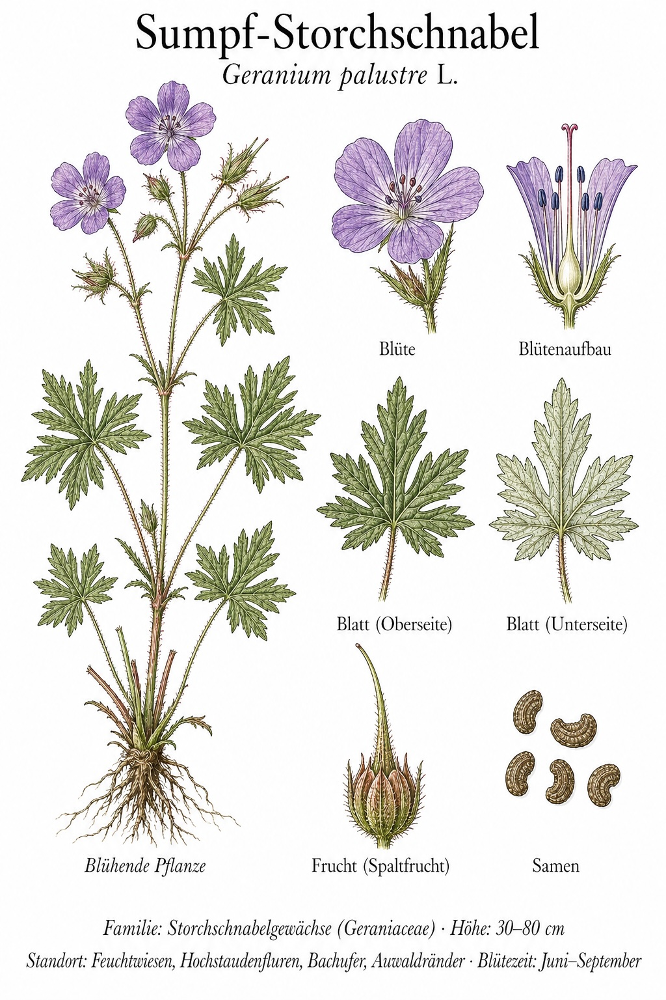
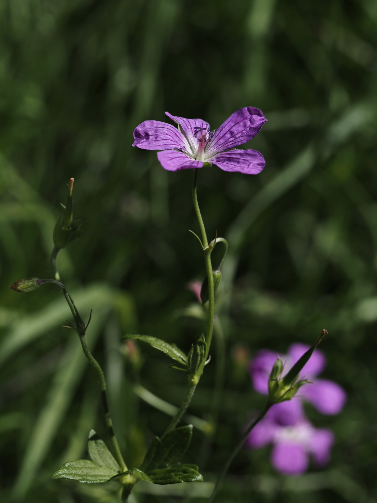
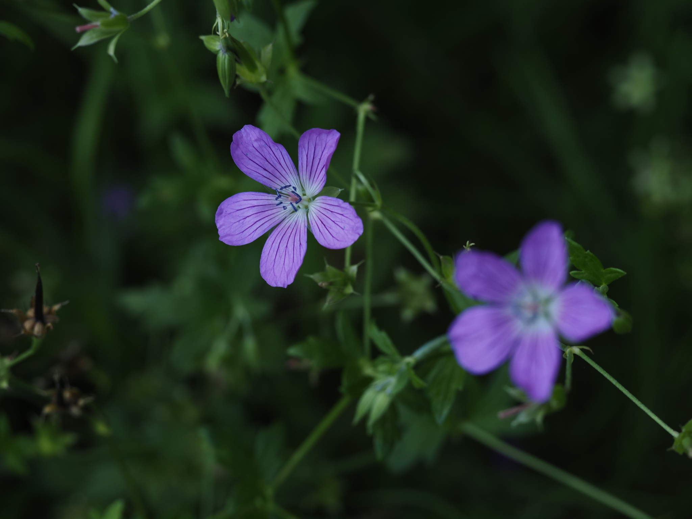

Purpurrot in feuchten Wiesen – ein Hingucker am Bachrand.



Storchschnabel-Schleudermechanismus
Nach der Blüte bildet sich die namensgebende lange Frucht, die einem Storchenschnabel ähnelt. Bei der Reife krümmt sich die Fruchtwand ruckartig auf und schleudert die Samen in hohem Bogen mehrere Meter weit. Diese „Pflanzenkatapulte" arbeiten so präzise, dass die Samen oft noch in luftgetragene Strömungen geraten – effiziente Verbreitung ohne Tier oder Wind als Helfer.
Standortzeiger Feuchtwiese
Anders als der häufigere Wiesen-Storchschnabel (G. pratense) braucht der Sumpf-Storchschnabel ständig feuchte Böden. Er wächst in Nasswiesen, an Gräben und Bachufern – Standorte, die in unserer Landschaft selten geworden sind. Wo er noch vorkommt, ist die Wiese meist nicht entwässert worden, ein wertvolles Biotop.
Wissenswertes & Merksätze
Erkennungszeichen
Tief geteilte, fünf- bis siebenfingerige Blätter (im Unterschied zu G. pratense weniger zerschlitzt). Blüten leuchtend purpur-rosa, etwa 3 cm im Durchmesser, mit dunklen Adern. Stängel oft rotbraun überlaufen.
Schutzwürdiger Standort
In vielen Bundesländern gilt der Sumpf-Storchschnabel als Indikator für intakte Feuchtwiesenökosysteme. Sein Rückgang ist eng an Entwässerung und Intensivlandwirtschaft gekoppelt.